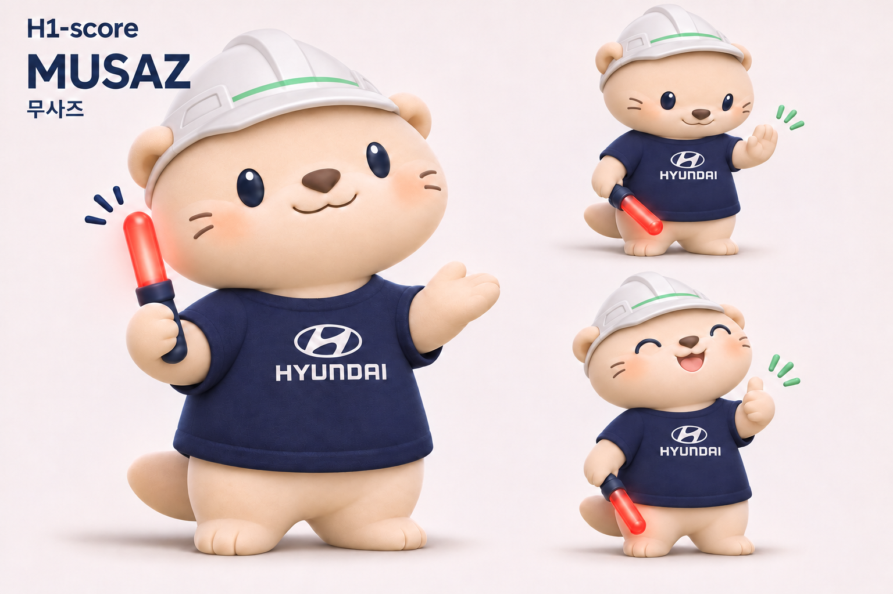
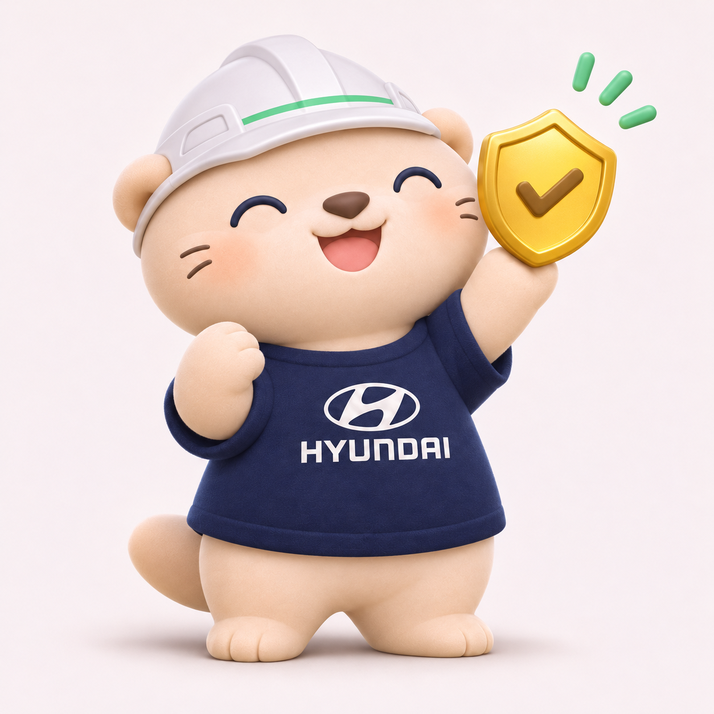

팀 무사즈 · 앱 H1-score · 마스코트 MUSAZ
Android 프로토타입 0.2.0 · 기존 네 포즈와 새 표정 세 종
실제 SDK 연결 / 참가자·M은 시연 데이터
프로토타입 실행 자료
APK 다운로드 · 실행 안내 · 구현 범위 · 검증 기록
Android Studio에서 android 폴더를 열어 실행합니다. 아래 이미지는 실제 앱에 포함한 자산입니다. 방패 무사즈는 새 배지 획득을 열 때만 표시합니다.
홈 · 응원높은 점수 · 축하낮은 점수 · 다시 응원
점수가 없으면 중립 안내 포즈를 씁니다. 이 표정 구간은 안전 등급이 아닌 시연 표현 기준입니다.
아래 내용은 원래 주제 구체화 초안입니다. 현재 구현과 후속 계획의 구분은 위 구현 범위 문서를 기준으로 확인하세요.

안내 · 멈춤 · 엄지척
금색 배지 축하H1-score 프로토타입 평가 및 보상 규칙 초안
작성 기준: 2026년 11월 5일. 앱은 H1-score, 팀은 무사즈, 마스코트는 MUSAZ로 정한다. 아래의 거리, 점수 비중, 지급량과 인원 조건은 시제품을 만들기 위한 제안값이다. 실제 주행 데이터로 검증된 안전 기준이나 확정된 제휴 혜택이 아니다.
서비스 정의
차량 내비게이션에서 같은 목적지를 선택한 운전자들이 마지막 접근 구간의 주행습관을 비교하고, 목적지 도착 후 결과와 마일리지를 받는다. 초기에 검증할 고객은 자차 출퇴근을 하고 정비 비용을 직접 지출하는 20~30대 운전자다. 고객 인터뷰에서는 ‘점수를 확인하는 것만으로 습관이 지속되는가’, ‘비교와 정비 혜택이 재참여 이유가 되는가’를 확인한다.
운전자는 정차 상태에서 목적지를 설정하고 참가에 동의한다. 주행 중에는 데이터 수집을 중심으로 동작하고, 도착 후 주차 상태에서 순위와 보상을 공개한다. 빠른 도착, 다른 차 추월, 우회로 주행에는 점수를 주지 않는다.
1. 차량끼리 연결하는 구조
Pleos SDK는 차량 상태와 내비게이션 정보를 읽는 연결 지점이다. 주변 모든 현대차의 화면에 점수를 보내거나 운전자를 자동 매칭해 주는 기능으로 가정하지 않는다. 참여 차량마다 H1-score가 설치되어 있고 사용자가 참여한 상태에서, 우리가 만드는 서버가 목적지 모임과 점수 공유를 담당한다.
차량 앱 → 목적지와 참가 세션 등록 → 서버의 목적지 모임 매칭 → 차량 데이터로 평가 → 서버 검증과 순위 정산 → 앱의 주차 후 결과 화면으로 이어진다.
실명과 번호판 대신 닉네임을 사용한다. 다른 참가자의 정확한 실시간 위치를 공개할 필요는 없다. 동일 목적지 판별에는 이름 문자열보다 지도 공급자와 POI 식별자를 우선하고, 같은 시설의 주차장 입구가 여러 개인 경우 시설 단위로 묶는 규칙을 둔다. SDK의 역할과 권한 원칙은 Pleos SDK 개요를 따른다.
2. 평가는 내비 경로의 남은 거리 10km부터
첫 시제품에서는 목적지까지 내비 경로상 남은 거리가 10km에 진입할 때 평가를 시작한다. 직선 반경 10km는 강, 고속도로 진출입, 우회 구간 때문에 실제 주행 길이가 크게 달라질 수 있다.
NaviHelper의 DestinationInfo에는 remainDistance, remainTime, poiId, poiSubId, poiProvider가 있다. remainDistance는 미터 단위로 설명되어 있다. 다만 필드 설명에 waypoint 표현이 섞여 있으므로, 최종 목적지에 대한 남은 거리인지와 갱신 시점은 에뮬레이터에서 확인한 뒤 10,000m 트리거로 사용한다. TripInfo.distance를 확인 없이 남은 거리로 대체하지 않는다. DestinationInfo API
| 상황 | 제안 동작 |
|---|
| 참가 시 목적지까지 경로가 10km 이상 | 참여를 예약하고 마지막 10km부터 평가 |
| 처음부터 10km 미만인 이동 | 개인 기록과 배지만 제공하고 유상 보상 순위에서는 제외 |
| 거리가 10km 경계에서 오르내림 | 같은 세션의 평가를 한 번만 시작 |
| 목적지 변경 | 원래 대결을 종료하고 새 목적지의 조건으로 새로 판단; 보상 중복 금지 |
| 경로 재탐색 | 기록을 이어가되 비교 가능한 경로인지 재검사; 회피 운전을 곧바로 감점하지 않음 |
| 도착 이벤트 발생 | 평가 종료 후보로 처리하고 이동 기록과 함께 검증 |
| 목적지 도착 후 주차 확인 | 결과, 순위, 마일리지, 배지 화면 공개 |
초기 유효 기록 조건은 ‘평가 구간에서 유효한 속도·제한속도 데이터로 확인되는 주행거리 9km 이상’과 ‘평가 구간 데이터 커버리지 90% 이상’으로 제안한다. 이 값은 실제 콜백 빈도와 오차를 본 뒤 조정한다. 조건 미달은 낮은 점수가 아니라 ‘평가 자료 부족’으로 표시한다. 시간을 늘리거나 우회해서 조건을 채우라는 안내는 하지 않는다.
최소 운전 시간 조건은 두지 않는다. 시간을 채우기 위해 느리게 운전할 동기를 만들지 않기 위해서다. 짧은 이동을 위한 별도 3km 리그는 향후 검증하고, 초기 10km 리그와 점수를 섞지 않는다.
3. 같은 목적지라도 비교 조건을 맞춘다
같은 목적지에 간다는 사실만으로 공정한 비교가 되지는 않는다. 시내 10km와 고속도로 10km의 신호, 회전, 교통 상황이 다르다.
‘목적지 모임’은 소속감을 만드는 단위로 두고, 마일리지 순위는 같은 목적지·비슷한 시간대·같은 접근 경로·같은 평가 길이·같은 점수 버전의 참가자끼리 매긴다. 첫 시제품은 목적지 하나와 사전에 정한 접근 경로 하나를 사용한다. 이후 충분한 표본이 있을 때 비교 범위를 넓힌다.
NaviHelper의 routeId를 표준 도로 링크 ID로 가정하거나, GPS로 정확한 차로까지 구분하지 않는다. 실제 서비스의 경로 비교에는 별도 지도 데이터 또는 검증된 경로 매칭이 필요하다. 인원이 부족하면 개인 결과만 보여주며, 테스트 차량이나 과거 기록을 실제 동시 참가자로 꾸미지 않는다.
4. SDK와 데이터의 역할
| 데이터 연결 | 쓰임 | 구현 조건과 한계 |
|---|
| NaviHelper 목적지 정보 | 모임 매칭, 평가 시작 후보, 도착 처리 | 목적지·경유지 의미와 갱신 주기 확인 |
| NaviHelper 제한속도 정보 | 현재 제한속도와 차량 속도 비교 | 도로 매칭, 단위, 값의 유효기간 확인; 오래된 제한속도 재사용 금지 |
| AAOS CarPropertyManager의 PERF_VEHICLE_SPEED | 실제 차량 속도, 시간에 따른 속도 변화 | 표준 속성 단위는 m/s. 대상 차량 지원과 CAR_SPEED 권한 확인 |
| Vehicle Seat | 운전석 안전벨트 상태 확인 | 운전석 영역과 Capability 확인. 버클 상태가 올바른 착용까지 증명하지는 않음 |
| Vehicle Brake | 브레이크가 눌렸는지 설명용 기록 | 공개 메서드는 Boolean. 제동 압력이나 제동의 위험성을 알 수 있는 값이 아님 |
| Vehicle TurnSignal | 방향지시등 사용 기록과 향후 회전 피드백 | 켰다는 사실만으로 올바른 차로 변경 또는 안전 운전 판정 불가 |
| Vehicle Odometer | 평가 거리와 주행 기록의 보조 검증 | 이벤트 분해능 확인. 거리만으로 고빈도 속도 신호를 대체하지 않음 |
| FusedLocation | 위치 품질 검토, 경로 검증 보조 | 대상 SDK 접근과 실제 수신 확인. 차로 판별 또는 차량 간 통신 기능으로 취급하지 않음 |
| TTS / STT | 짧은 음성 안내와 참가 의사 입력 | 대상 버전·실행 모드·권한 확인. 인식 실패 시 정차 중 입력 제공 |
| 차량의 주차 상태와 UI 제한 | 결과 화면을 열 수 있는 상태 판단 | 속도 0만으로 주차 판정 금지. 제공되는 기어·플랫폼 제한을 함께 확인 |
| 자체 서버 | 매칭, 점수 검증, 순위, 마일리지 원장 | Pleos SDK 밖에서 직접 구현 |
목적지·경유지 변경, 경로 재탐색, 제한속도 등 콜백은 NaviHelper 이벤트 문서에 정의되어 있다. 차량 속성은 Android PERF_VEHICLE_SPEED 문서, 브레이크 값은 Brake API를 기준으로 연결한다. 안전벨트는 Seat API, 거리 보조 신호는 Odometer API에서 확인한다.
SDK 종류를 늘리는 것 자체를 목표로 삼지 않는다. 이 서비스의 핵심은 목적지, 속도, 제한속도, 평가 구간, 결과 공개 시점이다. 창문·공조·조명·톨 도메인은 이 흐름에서 필요한 근거가 생기기 전에는 넣지 않는다.
5. 점수는 관측 가능한 주행습관부터
시제품의 작업용 이름은 ‘주행습관 점수 v0.1’로 둔다. 이 값만으로 사고 가능성이나 법규 위반 여부를 판정하지 않는다.
초기 점수 구조는 제한속도 준수 지표 70%, 가속의 부드러움 지표 30%를 제안한다. 이는 화면과 평가 파이프라인을 만드는 시작점이다. 감점 계수와 이벤트 경계는 실제 수집 데이터로 조정하고, 같은 대결에는 동일한 버전을 적용한다.
• 제한속도 준수 지표: 속도와 제한속도가 모두 유효한 이동 구간에서 초과 정도와 지속 구간을 반영한다. 정지 시간이 길다고 준수율이 올라가지 않도록 거리 기준으로 집계한다. 측정 오차를 처리하는 필터는 과속 허용 기준으로 설명하지 않는다.
• 가속 지표: 타임스탬프가 있는 차량 속도 변화로 계산한다. 충분한 샘플링과 노이즈 처리가 확인된 경우에만 사용한다. 주행 상황에 따른 정상 가속을 나쁘다고 단정하지 않으며, 실제 보상 적용 전에는 다양한 도로 상황을 검증한다.
• 급제동: 시제품에서는 자동 감점에서 제외한다. 위험 회피를 위한 정상 제동과 부주의한 제동을 현재 신호만으로 구분할 수 없기 때문이다.
• 안전벨트: 운전석 데이터가 지원되는 시제품 환경에서 참가 상태 검증에 사용한다. 상태 미확인은 ‘미착용’으로 바꾸지 않는다. 단순 착용만으로 큰 가산점을 반복 지급하지 않는다.
• 방향지시등: 첫 버전에서는 설명용 기록으로 사용한다. 깜빡이 횟수에 점수를 주지 않으며, 정확한 회전·차로 변경 확인 없이 미사용 감점을 주지 않는다.
속도 또는 제한속도 정보가 빠지면 0점·100점을 임의로 넣지 않는다. 일부 참가자에게만 점수 비중을 바꾸면 비교가 달라지므로, 공통 평가 조건을 충족하지 못한 기록은 보상 순위에서 제외한다.
6. 마일리지는 완료보다 자격을 갖춘 순위에 지급
단순 완료에는 현금성 마일리지를 지급하지 않고, 이동 기록과 배지를 남기는 방식을 권한다. 순위 보상은 유효한 평가 기록, 공통 점수 버전, 제안 기준점 85점 이상을 함께 충족할 때만 준다. 낮은 점수의 1위에게 무조건 보상하지 않는다.
아래 M은 시제품 내부 단위이며 원화·블루멤버스 포인트와의 교환비율은 없다.
| 유효 참가자 수 | 1위 | 2위 | 3위 | 그 외 |
|---|
| 1~2명 | 0M | 0M | 해당 없음 | 해당 없음 |
| 3명 | 60M | 20M | 0M | 해당 없음 |
| 4명 | 80M | 40M | 20M | 0M |
| 5명 | 100M | 60M | 30M | 0M |
표의 순위는 유효 참가자 전체의 순위다. 그 순위의 운전자가 85점 미만이면 해당 지급액은 지급하지 않는다. 기준 미달로 남은 예산을 다른 사람에게 자동 재배분하지 않는다. 5명을 넘는 경우도 같은 참가 조건과 고정된 규칙에 따라 그룹을 나누며, 운전자에게 더 높은 보상이나 빠른 정산을 위한 가속을 유도하지 않는다.
동점은 같은 순위에 해당하는 지급 슬롯의 합계를 나눈다. 예를 들어 5인 그룹 공동 1위 두 명은 각각 80M을 받고, 다음 참가자는 3위 30M이 된다. 단순히 먼저 도착했거나 더 빠르게 운전했다는 이유로 동점을 가르지 않는다. 화면 표시와 순위 계산의 반올림 규칙도 동일하게 정한다.
남용 방지를 위한 초기 운영값은 동일 목적지 하루 1회, 전체 하루 최대 2회의 보상 정산으로 제안한다. 목적지 재설정, 앱 재시작, 동일 기록 재전송으로 보상을 중복 지급하지 않도록 세션과 정산 ID를 서버에서 관리한다. 참가자의 기록 도착이 늦으면 개인 결과를 먼저 보여주고, 그룹 결과가 확정된 뒤 마일리지를 지급한다. 운전자에게 경쟁 종료 카운트다운은 표시하지 않는다.
엔진오일, 와이퍼, 에어컨 필터 등 정비 혜택은 향후 제휴 후보로 둔다. 전기차에는 적합한 소모품 혜택을 제공한다. 시제품에서는 ‘혜택 예시’와 모의 교환으로 표시한다. 실제 제휴 이전에 정비소 사용 가능, 현대 포인트 연동, 무료 교환을 확정된 혜택으로 표시하지 않는다. 출시 단계에는 예산 상한, 쿠폰 단가, 사용률, 부정 사용 비용을 바탕으로 M의 경제적 가치를 정한다.
7. 배지와 MUSAZ의 역할
확정된 포즈는 안내, 멈춤, 엄지척, 금색 방패 배지 축하의 네 가지다. 의상은 현대 로고가 있는 남색 티셔츠와 흰색·민트 안전모로 통일한다. 티셔츠에 붙이는 배지는 사용하지 않고, 성취 화면에서만 금색 배지를 손에 든 포즈를 사용한다.
| 제안 배지 | 획득 조건 |
|---|
| 첫 무사 도착 | 첫 유효 평가 완료 |
| 첫 발자국 | 앱 가입 후 해당 목적지 첫 방문 기록; 평생 첫 방문으로 표현하지 않음 |
| 무사한 습관 | 기준점 이상 유효 기록 5회 |
| 무사 TOP 3 | 유효 그룹 상위 3위와 기준점 동시 충족 |
| 꾸준한 무사즈 | 서로 다른 날짜에 유효 기록 7회 |
이 배지에는 별도 현금성 보상을 붙이지 않아 배지를 위해 이동을 늘릴 유인을 줄인다. 안내 포즈는 정차 중 시작 안내, 멈춤 포즈는 설정을 주차 후 이용할 수 있음을 알리는 화면, 엄지척은 결과 확인, 금색 배지 포즈는 도착 후 성취 화면에 사용한다. 현재 결과물은 3D 스타일의 래스터 이미지이며 리깅된 3D 모델이나 애니메이션 파일은 아니다.
8. 화면은 사용자의 이동 단계에 맞춘다
| 화면 | 사용자가 알아야 할 것 | 넣을 요소 |
|---|
| 정차 중 홈 | 이번 목적지에서 참여할 수 있는가 | 목적지, 평가 구간, 참가 조건, 참가 버튼 |
| 참가 확인 | 무엇을 측정하고 언제 보상을 받는가 | 마지막 10km 설명, 데이터 항목, 보상 규칙 요약 |
| 주행 상태 | 기록이 정상인지 | 플랫폼 심사 범위에 맞는 최소 상태; 순위·리워드 애니메이션 제외 |
| 도착 후 주차 | 내 결과가 왜 이렇게 나왔는가 | 점수 구성, 유효 거리, 정보 부족 여부, 개인 피드백 |
| 그룹 결과 | 누구와 비교했고 얼마나 받는가 | 비교 조건, 동점 처리, 확정·정산 대기 상태, 마일리지 |
| 배지와 혜택 | 어떤 성취와 사용처가 있는가 | MUSAZ 축하 포즈, 배지, 제휴 예시 또는 실제 계약된 혜택 |
게임 성격의 UI를 주행 중 열어 두지 않는다. Pleos는 게임 등을 포함한 미디어 기능의 주행 중 사용 제한을 명시하고 있으며, 앱 분류와 백그라운드 수집 허용 범위도 확인해야 한다. 화면을 줄였다는 이유만으로 심사 통과가 보장되지는 않는다. 운전자 주의 분산 요소 최소화 설계
9. Android Studio 프로토타입 제작 순서
1. Android Studio와 공식 Pleos 에뮬레이터를 준비하고 Kotlin 프로젝트를 만든다. 문서의 SDK 버전과 대상 OS 호환성을 맞춘다.
2. 점수 화면에 앞서 데이터 확인 화면을 만든다. 목적지, remainDistance, 제한속도, 차량 속도, 운전석 벨트, 주차 상태의 실제 값·단위·수신 시각을 기록한다.
3. SDK 권한과 Capability를 확인한다. 문서에 API가 있다는 사실과 실행 환경에서 데이터가 오는 사실을 구분한다.
4. 10km 진입, 목적지 변경, 재탐색, 도착, 데이터 누락을 시나리오로 재현한다.
5. 시제품 서버로 서로 다른 세션을 연결해 목적지 매칭, 결과 전송, 중복 정산 방지를 구현한다.
6. 세 참가자가 완주한 시나리오에서 점수·동점·기준점 미달·보상·배지를 확인한다. 시뮬레이션 입력과 실제 SDK 입력을 화면과 로그에서 구분한다.
7. 정차 중 화면과 주행 중 제한 전환을 검증하고, 시연 영상에서 목적지 설정부터 결과까지 한 흐름을 보여준다.
첫 확인의 중단 조건은 ‘핵심 차량 속도나 제한속도 값이 제공되지 않는 경우’다. 이때 실제 연동 완료라고 표시하지 않고, 모의 데이터로 UI와 정산 흐름을 구현한 범위를 분명히 한다. 개발 시작 안내, Virtual Console 가이드
10. 공모전에서 설명할 근거
차량특화성은 차량 내비 목적지, 차량 상태, 주차 후 결과를 연결하는 경험으로 보여준다. 창의성은 같은 목적지의 운전자들과 주행습관을 비교하고 정비 혜택까지 이어지는 흐름으로 설명하되, 유사 서비스와 차이 및 사용자 인터뷰 근거를 준비한다. 기술 활용성은 실제로 받아 본 SDK 값과 이를 쓰는 이유를 제시한다. 사업성은 정비비를 직접 부담하는 고객의 재참여 동기와 보상 예산을 함께 설명한다.
공식 심사 기준은 차량특화성·창의성·기술 활용성·사업성이며 세부 배점은 공개하지 않는다. 프로토타입 영상과 소스·APK는 가산점 항목이고, 2차 PT 전에는 실제 동작 앱이 필요하다. 기업 인재상을 별도의 공식 공모전 평가 항목으로 단정하지 않는다. 공모전 심사 안내